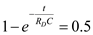
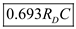
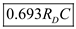
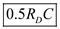
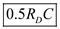
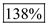
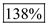

Step 1:
Refer to Figure P14.1 (a) in the textbook for a pseudo-NMOS logic circuit with resistive load.
The propagation delay from low to high transition,  is the time at which the output reaches half of the supply voltage.
is the time at which the output reaches half of the supply voltage.
The expression for the output voltage for resistive load is,
Find the time at which the output reaches half of supply voltage.
Observe that the following condition for the output to reach  :
:

Simplify the expression to get the time at which the output reaches half of supply voltage.

Thus, the value of propagation delay from low to high transition,  for a pseudo-NMOS logic circuit with resistive load is, .
for a pseudo-NMOS logic circuit with resistive load is, .
Step 2:
Refer to Figure P14.1 (b) in the textbook for the pseudo-NMOS logic circuit with current-source load.
Find the time at which the output reaches half of supply voltage.
Consider the following condition for the output to reach  :
:
Consider that the current source is,
Substitute the expression of  in the expression of .
in the expression of .
Thus, the value of propagation delay from low to high transition,  for a pseudo-NMOS logic circuit with current-source load is, .
for a pseudo-NMOS logic circuit with current-source load is, .
Step 3:
Find the percentage reduction of propagation from low to high transition,  when the current source-load is used from the expressions of
when the current source-load is used from the expressions of  for the both circuits.
for the both circuits.
Thus, the percentage reduction of propagation from low to high transition,  when the current source-load is used is, .
when the current source-load is used is, .